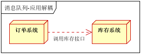

第12章 MQ¶
12.1 ActiveMQ 如果消息发送失败怎么办？¶
Activemq 有两种通信方式，点到点形式和发布订阅模式。
如果是点到点模式的话，如果消息发送不成功此消息默认会保存到 activemq 服务端知道有消费者将其消费，所以此时消息是不会丢失的。
如果是发布订阅模式的通信方式，默认情况下只通知一次，如果接收不到此消息就没有了。这种场景只适用于对消息送达率要求不高的情况。如果要求消息必须送达不可以丢失的话，需要配置持久订阅。每个订阅端定义一个 id，在订阅是向 activemq 注册。发布消息和接收消息时需要配置发送模式为持久化。此时如果客户端接收不到消息，消息会持久化到服务端，直到客户端正常接收后为止。
12.2如何使用ActiveMQ 解决分布式事务？¶
在互联网应用中，基本都会有用户注册的功能。在注册的同时，我们会做出如下操作：
收集用户录入信息，保存到数据库向用户的手机或邮箱发送验证码等等…
如果是传统的集中式架构，实现这个功能非常简单：开启一个本地事务，往本地数据库中插入一条用户数据，发送验证码，提交事物。
但是在分布式架构中，用户和发送验证码是两个独立的服务，它们都有各自的数据库，那么就不能通过本地事物保证操作的原子性。这时我们就需要用到 ActiveMQ（消息队列）来为我们实现这个需求。
在用户进行注册操作的时候，我们为该操作创建一条消息，当用户信息保存成功时，把这条消息发送到消息队列。验证码系统会监听消息，一旦接受到消息，就会给该用户发送验证码。
12.3 如何防止ActiveMQ消息重复发送？¶
解决方法很简单：增加消息状态表。通俗来说就是一个账本，用来记录消息的处理状态，每次处理消息之前，都去状态表中查询一次，如果已经有相同的消息存在，那么不处理，可以防止重复发送。
12.4使用消息队列有什么缺点？¶
优点就是在特殊场景下有其对应的好处，解耦、异步、削峰。
缺点有以下几个：
系统可用性降低
系统引入的外部依赖越多，越容易挂掉。本来你就是 A 系统调用 BCD 三个系统的接口就好了，人 ABCD 四个系统好好的，没啥问题，你偏加个 MQ 进来，万一 MQ 挂了咋整，MQ 一挂，整套系统崩溃的，你不就完了？如何保证消息队列的高可用，可以点击这里查看。
系统复杂度提高
硬生生加个 MQ 进来，你怎么保证消息没有重复消费？怎么处理消息丢失的情况？怎么保证消息传递的顺序性？头大头大，问题一大堆，痛苦不已。
一致性问题
A 系统处理完了直接返回成功了，人都以为你这个请求就成功了；但是问题是，要是 BCD 三个系统那里，BD 两个系统写库成功了，结果 C 系统写库失败了，咋整？你这数据就不一致了。
所以消息队列实际是一种非常复杂的架构，你引入它有很多好处，但是也得针对它带来的坏处做各种额外的技术方案和架构来规避掉，做好之后，你会发现，妈呀，系统复杂度提升了一个数量级，也许是复杂了 10 倍。但是关键时刻，用，还是得用的。
12.5消息队列的作用与使用场景？¶
消息队列在实际应用中常用的使用场景。异步处理，应用解耦，流量削锋和消息通讯四个场景
2.1异步处理
场景说明：用户注册后，需要发注册邮件和注册短信。传统的做法有两种 1.串行的方式；2.并行方式
（1）串行方式：将注册信息写入数据库成功后，发送注册邮件，再发送注册短信。以上三个任务全部完成后，返回给客户端
（2）并行方式：将注册信息写入数据库成功后，发送注册邮件的同时，发送注册短信。以上三个任务完成后，返回给客户端。与串行的差别是，并行的方式可以提高处理的时间
假设三个业务节点每个使用50毫秒钟，不考虑网络等其他开销，则串行方式的时间是150毫秒，并行的时间可能是100毫秒。
因为CPU在单位时间内处理的请求数是一定的，假设CPU1秒内吞吐量是100次。则串行方式1秒内CPU可处理的请求量是7次（1000/150）。并行方式处理的请求量是10次（1000/100）
小结：如以上案例描述，传统的方式系统的性能（并发量，吞吐量，响应时间）会有瓶颈。如何解决这个问题呢？
引入消息队列，将不是必须的业务逻辑，异步处理。改造后的架构如下：
按照以上约定，用户的响应时间相当于是注册信息写入数据库的时间，也就是50毫秒。注册邮件，发送短信写入消息队列后，直接返回，因此写入消息队列的速度很快，基本可以忽略，因此用户的响应时间可能是50毫秒。因此架构改变后，系统的吞吐量提高到每秒20 QPS。比串行提高了3倍，比并行提高了两倍
2.2应用解耦
场景说明：用户下单后，订单系统需要通知库存系统。传统的做法是，订单系统调用库存系统的接口。如下图

传统模式的缺点：
假如库存系统无法访问，则订单减库存将失败，从而导致订单失败
订单系统与库存系统耦合
如何解决以上问题呢？引入应用消息队列后的方案，如下图：
订单系统：用户下单后，订单系统完成持久化处理，将消息写入消息队列，返回用户订单下单成功
库存系统：订阅下单的消息，采用拉/推的方式，获取下单信息，库存系统根据下单信息，进行库存操作
假如：在下单时库存系统不能正常使用。也不影响正常下单，因为下单后，订单系统写入消息队列就不再关心其他的后续操作了。实现订单系统与库存系统的应用解耦
2.3流量削锋
流量削锋也是消息队列中的常用场景，一般在秒杀或团抢活动中使用广泛
应用场景：秒杀活动，一般会因为流量过大，导致流量暴增，应用挂掉。为解决这个问题，一般需要在应用前端加入消息队列。
可以控制活动的人数
可以缓解短时间内高流量压垮应用
用户的请求，服务器接收后，首先写入消息队列。假如消息队列长度超过最大数量，则直接抛弃用户请求或跳转到错误页面
秒杀业务根据消息队列中的请求信息，再做后续处理
2.4日志处理
日志处理是指将消息队列用在日志处理中，比如Kafka的应用，解决大量日志传输的问题。
日志采集客户端，负责日志数据采集，定时写受写入Kafka队列
Kafka消息队列，负责日志数据的接收，存储和转发
日志处理应用：订阅并消费kafka队列中的日志数据
以下是新浪kafka日志处理应用案例：转自（http://cloud.51cto.com/art/201507/484338.htm）
(1)Kafka：接收用户日志的消息队列
(2)Logstash：做日志解析，统一成JSON输出给Elasticsearch
(3)Elasticsearch：实时日志分析服务的核心技术，一个schemaless，实时的数据存储服务，通过index组织数据，兼具强大的搜索和统计功能
(4)Kibana：基于Elasticsearch的数据可视化组件，超强的数据可视化能力是众多公司选择ELK stack的重要原因
2.5消息通讯
消息通讯是指，消息队列一般都内置了高效的通信机制，因此也可以用在纯的消息通讯。比如实现点对点消息队列，或者聊天室等
点对点通讯：
客户端A和客户端B使用同一队列，进行消息通讯。
聊天室通讯：
客户端A，客户端B，客户端N订阅同一主题，进行消息发布和接收。实现类似聊天室效果。
以上实际是消息队列的两种消息模式，点对点或发布订阅模式。模型为示意图，供参考。
12.6如何保证消息的顺序性？¶
顺序会错乱的俩场景：
RabbitMQ：一个 queue，多个 consumer。比如，生产者向 RabbitMQ 里发送了三条数据，顺序依次是 data1/data2/data3，压入的是 RabbitMQ 的一个内存队列。有三个消费者分别从 MQ 中消费这三条数据中的一条，结果消费者2先执行完操作，把 data2 存入数据库，然后是 data1/data3。这不明显乱了。

解决方案：
拆分多个 queue，每个 queue 一个 consumer，就是多一些 queue 而已，确实是麻烦点；或者就一个 queue 但是对应一个 consumer，然后这个 consumer 内部用内存队列做排队，然后分发给底层不同的 worker 来处理。
12.7如何保证消息队列的高可用？¶
镜像集群模式（高可用性）
这种模式，才是所谓的 RabbitMQ 的高可用模式。跟普通集群模式不一样的是，在镜像集群模式下，你创建的 queue，无论元数据还是 queue 里的消息都会存在于多个实例上，就是说，每个 RabbitMQ 节点都有这个 queue 的一个完整镜像，包含 queue 的全部数据的意思。然后每次你写消息到 queue 的时候，都会自动把消息同步到多个实例的 queue 上。
那么如何开启这个镜像集群模式呢？其实很简单，RabbitMQ 有很好的管理控制台，就是在后台新增一个策略，这个策略是镜像集群模式的策略，指定的时候是可以要求数据同步到所有节点的，也可以要求同步到指定数量的节点，再次创建 queue 的时候，应用这个策略，就会自动将数据同步到其他的节点上去了。
这样的话，好处在于，你任何一个机器宕机了，没事儿，其它机器（节点）还包含了这个 queue 的完整数据，别的 consumer 都可以到其它节点上去消费数据。
12.8无法被路由的消息，去了哪里？¶
如果没有任何设置，无法路由的消息会被直接丢弃。
无法路由的情况：Routing key不正确
解决方案：
1.使用mandatory = true配合ReturnListener，实现消息回发
2.声明交换机时，指定备份交换机。
12.9消息队列过期失效问题¶
假设你用的是 RabbitMQ，RabbtiMQ 是可以设置过期时间的，也就是 TTL。如果消息在 queue 中积压超过一定的时间就会被 RabbitMQ 给清理掉，这个数据就没了。那这就是第二个坑了。这就不是说数据会大量积压在 mq 里，而是大量的数据会直接搞丢。
这个情况下，就不是说要增加 consumer 消费积压的消息，因为实际上没啥积压，而是丢了大量的消息。我们可以采取一个方案，就是批量重导，这个我们之前线上也有类似的场景干过。就是大量积压的时候，我们当时就直接丢弃数据了，然后等过了高峰期以后，比如大家一起喝咖啡熬夜到晚上12点以后，用户都睡觉了。这个时候我们就开始写程序，将丢失的那批数据，写个临时程序，一点一点的查出来，然后重新灌入 mq 里面去，把白天丢的数据给他补回来。也只能是这样了。假设 1 万个订单积压在 mq 里面，没有处理，其中 1000 个订单都丢了，你只能手动写程序把那 1000 个订单给查出来，手动发到 mq 里去再补一次。
12.10消息队列满了怎么办？¶
· 修复现有consumer的问题，并将其停掉。
· 重新创建一个容量更大的topic，比如patition是原来的10倍。
· 编写一个临时consumer程序，消费原来积压的队列。该consumer不做任何耗时的操作，将消息均匀写入新创建的队列里。
· 将修复好的consumer部署到原来10倍的机器上消费新队列。
· 消息积压解决后，恢复原有架构。
12.11RabbitMQ 有哪些重要的组件？¶
12.12RabbitMQ 有几种广播类型？¶
三种广播模式：
fanout: 所有bind到此exchange的queue都可以接收消息（纯广播，绑定到RabbitMQ的接受者都能收到消息）；
direct: 通过routingKey和exchange决定的那个唯一的queue可以接收消息；
topic: 所有符合routingKey(此时可以是一个表达式)的routingKey所bind的queue可以接收消息；
12.14消息如何分发？¶
1.Round-Robin（轮询）
默认的策略，消费者轮流，平均地收到消息。
2.Fair dispatch（公平分发）
如果要实现根据消费者的处理能力来分发消息，给空闲的消费者发送更多消息，可以用basicQos(int prefetch_count)来设置。prefetch_count的含义：当消费者有多少条消息没有响应ACK时，不再给这个消费者发送消息。
12.15如何确保消息正确地发送至 RabbitMQ？如何确保消息接收方消费了消息？¶
发送方确认模式
将信道设置成 confirm 模式（发送方确认模式），则所有在信道上发布的消息都会被指派一个唯一的 ID。
一旦消息被投递到目的队列后，或者消息被写入磁盘后（可持久化的消息），信道会发送一个确认给生产者（包含消息唯一 ID）。
如果 RabbitMQ 发生内部错误从而导致消息丢失，会发送一条 nack（notacknowledged，未确认）消息。
发送方确认模式是异步的，生产者应用程序在等待确认的同时，可以继续发送消息。当确认消息到达生产者应用程序，生产者应用程序的回调方法就会被触发来处理确认消息。
12.16为什么不应该对所有的 message 都使用持久化机制？¶
首先，必然导致性能的下降，因为写磁盘比写 RAM 慢的多，message 的吞吐量可能有 10 倍的差距。其次，message 的持久化机制用在 RabbitMQ 的内置 cluster 方案时会出现“坑爹”问题。矛盾点在于，若 message 设置了 persistent 属性，但 queue 未设置 durable 属性，那么当该 queue 的 owner node 出现异常后，在未重建该 queue 前，发往该 queue 的 message 将被 blackholed ；若 message 设置了 persistent 属性，同时 queue 也设置了 durable 属性，那么当 queue 的 owner node 异常且无法重启的情况下，则该 queue 无法在其他 node 上重建，只能等待其 owner node 重启后，才能恢复该 queue 的使用，而在这段时间内发送给该 queue 的 message 将被 blackholed 。所以，是否要对 message 进行持久化，需要综合考虑性能需要，以及可能遇到的问题。若想达到 100,000 条/秒以上的消息吞吐量（单 RabbitMQ 服务器），则要么使用其他的方式来确保 message 的可靠 delivery ，要么使用非常快速的存储系统以支持全持久化（例如使用 SSD）。另外一种处理原则是：仅对关键消息作持久化处理（根据业务重要程度），且应该保证关键消息的量不会导致性能瓶颈。
12.16ActiveMQ和RabbitMQ的区别？¶
1.ActiveMq，传统的消息队列，使用Java语言编写。基于JMS（Java Message Service），采用多线程并发，资源消耗比较大。支持P2P和发布订阅两种模式。
2.RabbitMQ，基于AMQP协议实现，支持多种场景，社区活跃量大。高性能，高可用，支持海量数据。
两者区别在于JMS和AMQP,
JMS提供了两种消息模型，peer-2-peer(点对点)以及publish-subscribe（发布订阅）模型。当采用点对点模型时，消息将发送到一个队列，该队列的消息只能被一个消费者消费。而采用发布订阅模型时，消息可以被多个消费者消费。在发布订阅模型中，生产者和消费者完全独立，不需要感知对方的存在。
在AMQP中，消息路由（messagerouting）和JMS存在一些差别，在AMQP中增加了Exchange和binding的角色。producer将消息发送给Exchange，binding决定Exchange的消息应该发送到那个queue，而consumer直接从queue中消费消息。queue和exchange的bind有consumer来决定。
12.17RabbitMQ 中的 broker 是指什么？cluster 又是指什么？¶
broker 是指一个或多个 erlang node 的逻辑分组，且 node 上运行着 RabbitMQ 应用程序。cluster 是在 broker 的基础之上，增加了 node 之间共享元数据的约束。

12.18什么是元数据？元数据分为哪些类型？包括哪些内容？与 cluster 相关的元数据有哪些？元数据是如何保存的？元数据在 cluster 中是如何分布的？¶
在非 cluster 模式下，元数据主要分为 Queue 元数据（queue 名字和属性等）、Exchange 元数据（exchange 名字、类型和属性等）、Binding 元数据（存放路由关系的查找表）、Vhost 元数据（vhost 范围内针对前三者的名字空间约束和安全属性设置）。
在 cluster 模式下，还包括 cluster 中 node 位置信息和 node 关系信息。元数据按照 erlang node 的类型确定是仅保存于 RAM 中，还是同时保存在 RAM 和 disk 上。元数据在 cluster 中是全 node 分布的。
12.19RabbitMQ 上的一个 queue 中存放的 message 是否有数量限制？¶
可以认为是无限制，因为限制取决于机器的内存，但是消息过多会导致处理效率的下降。
12.20RabbitMQ 概念里的 channel、exchange 和 queue 这些东西是逻辑概念，还是对应着进程实体？这些东西分别起什么作用？¶
queue 具有自己的 erlang 进程；exchange 内部实现为保存 binding 关系的查找表；
channel 是实际进行路由工作的实体，即负责按照 routing_key 将 message 投递给queue 。由 AMQP 协议描述可知，channel 是真实 TCP 连接之上的虚拟连接，所有AMQP 命令都是通过 channel 发送的，且每一个 channel 有唯一的 ID。一个 channel 只能被单独一个操作系统线程使用，故投递到特定 channel 上的 message 是有顺序的。但一个操作系统线程上允许使用多个 channel 。channel 号为 0 的 channel 用于处理所有对于当前 connection 全局有效的帧，而 1-65535 号 channel 用于处理和特定 channel 相关的帧。AMQP 协议给出的 channel 复用模型如下其中每一个 channel 运行在一个独立的线程上，多线程共享同一个 socket。
12.21消息在什么时候会变成Dead Letter（死信）？¶
1.消息被拒绝并且没有设置重新入队：（NACK || Reject）&&requeue == false
2.消息过期（消息或者队列的TTL设置）
3.消息堆积，并且队列达到最大长度，先入队的消息会变成DL。
可以在声明队列的时候，指定一个Dead Letter Exchange，来实现Dead Letter的转发。
12.22RabbitMQ如何实现延时队列？¶
利用TTL（队列的消息存活时间或消息的存活时间），加上死信交换机。
当然还有一种方式就是先保存到数据库，用调度器扫描发送（时间不够精准）
12.23SpringBoot中，bean还没有初始化好，消费者就开始监听取消息，导致空指针异常，怎么让消费者在容器启动完毕后才开始监听？¶
RabbitMQ中有一个auto_startup参数，可以控制是否在容器启动时就监听启动
全局参数：
spring.rabbitmq.listener.auto-startup=true ### 默认是true
自定义容器，容器可以应用到消费者：
// 默认是true
factory.setAutoStartup(true);
消费者单独设置
@RabbitListener( queues = "${com.gupaoedu.thirdqueue}" ,autoStartup = "false")
本文总阅读量次